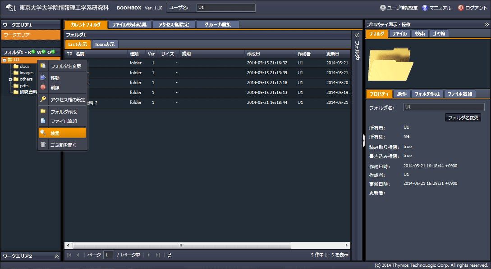
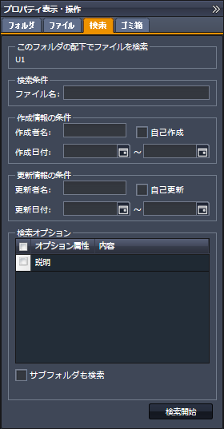
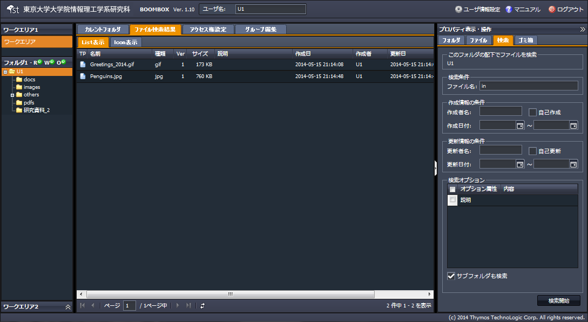

SecretFilesマニュアル
4.SecretFilesサービス(操作編)
4.2.9 ファイルの検索
ファイルを検索する手順を説明します。
(1) 検索対象フォルダを選択し、右クリックメニューを開く
『検索』をクリックします。

(2) 自動的に以下構成の右ペインが開く
右ペインにて、【検索タブ】が開きます。表示された条件を入力し、『検索開始』をクリックします。

(3) 検索結果表示
検索結果は、中央ペインのファイル検索結果タブに表示されます。
そのままファイルをダウンロードすることが可能です。
